Physics-Informed Neural Networks (PINNs) require repeated high-order spatial differentiation during training. Standard autodiff produces exponentially large computational graphs at each derivative order, making high-order PINN training prohibitively expensive. We present $n$-TangentProp, which exploits the recursive structure of neural networks and Faà di Bruno's formula to compute $n$-th order derivatives in a single forward pass. For PINN experiments requiring three or more derivatives, this yields dramatic speedups: over 24× for the third-order self-similar Burgers profile and over 65× for the fourth-order profile.
This post accompanies this paper, these slides, and this GitHub repository. Citation quality here is informal — please see the paper for formal references.
In January of this year the world's most famous mathematician, Terrence Tao, cited PINNs (Physics Informed Neural Networks) as a promising numerical method for assisting mathematicians in the search for a solution to the Navier-Stokes Millennium prize problem.
The paper he cited was also the motivation for the work discussed here. The authors use PINNs to find solutions to the Boussinesq equation in self-similar coordinates — an important step toward understanding finite-time blowup in fluid equations, where the solutions are extremely difficult to compute using standard numerical methods.
There are, in my view, three main impediments to mobilizing PINN techniques on a wider class of problems:
In this post we address the first point: the computational inefficiency of PINN training. We propose an alternative to autodiff that computes neural network derivatives in linear rather than exponential time. Since most PINN applications take at least three spatial derivatives, this asymptotic improvement yields large practical speedups.
One of the reasons we care about neural networks is that they are universal function approximators: for any function and desired precision there exists a sufficiently large network that approximates it within that tolerance. Finding these weights is always theoretically possible but can be practically difficult.
We typically train neural networks using gradient descent, which requires a supervised learning target. Given pairs $(x_i, y_i)$ and a network $u$, a typical loss is
$$L(u)=\sum_{i}|y_i-u(x_i)|^2,$$the mean-squared error. Gradient descent updates network parameters via
$$\theta \leftarrow \theta -\eta\nabla_\theta L(u),$$where $\eta$ controls the step size.
PINNs are neural networks trained to approximate the solution of an ODE or PDE. Because neural networks with smooth activation functions are $C^\infty$ function approximators, and $C^\infty$ functions are dense in the function spaces we care about (e.g. $L^2$ and Sobolev spaces), we can use gradient descent to approximate solutions of differential equations.
Let $u_\theta(\boldsymbol{x})$ be a feed-forward neural network with parameters $\theta$. Our goal is to find $\theta$ such that $u_\theta$ is a good $C^\infty$ approximation to the solution $u$ of $F(\partial^\alpha u;\,\boldsymbol{x})=0$. We train over a discrete domain $\Omega=\{\,\boldsymbol{x}_1, \boldsymbol{x}_2, \cdots, \boldsymbol{x}_N\,\}$ using the PINN loss
$$L(u_\theta) = \frac{1}{N}\sum_{k=1}^N|F(\partial^\alpha u_\theta;\,\boldsymbol{x}_k)|^2+\text{BC},\tag{1}$$the mean-squared error of the differential equation residual $F$, plus a boundary condition term BC. Since $u_\theta$ is $C^\infty$ with a known derivative structure, we can exactly compute all derivatives $\partial^\alpha u_\theta$ appearing in the loss.
Training is further complicated by the need to enforce boundary conditions, which introduces problems typical of multi-target optimization. One more practically important aspect: training a PINN on the first-order loss (1) alone yields slow convergence. Empirically, convergence is greatly improved by the higher-order Sobolev loss
$$L^{(m)}_{\text{Sobolev}}(u_\theta) = \frac{1}{N}\sum_{k=1}^N\sum_{j=0}^m Q_j\left|\nabla_{\boldsymbol{x}}^j F(\partial^\alpha u;\,\boldsymbol{x}_k)\right|^2 + \text{BC}, \tag{2}$$where the $Q_j$ are relative weights treated as hyperparameters. The key point for our present discussion: the Sobolev loss requires taking additional spatial derivatives during training.
PINNs occupy a somewhat strange place in numerics. On one hand they can solve seemingly intractable problems. On the other, they are slow to train, prone to poor convergence, and lack rigorous error analysis. For problems where traditional numerics work well, PINNs are generally not worth the trouble.
However, a use case for which PINNs are particularly well-suited is finding self-similar blowup profiles in fluid mechanics. Shock formation can be understood as arising from competing scalings between spatial and temporal features, and by transforming into self-similar coordinates one can convert the PDE into a much simpler ODE.
As an example, the self-similar Burgers equation in update form reads
$$W'(X)=-\frac{\gamma W(X)}{(1+\gamma)X+W(X)},$$which is naïvely singular at the origin. More importantly, we must solve for $W$ and $\gamma$ simultaneously: the constraint that determines $\gamma$ is a smoothness condition on $W$, which is satisfied only for a countably infinite sequence of values. PINNs allow us to hold an explicit $C^\infty$ form for the approximation and solve for both $W$ and $\gamma$ simultaneously via gradient descent on (1) or the Sobolev target (2).
In summary: PINNs are a niche numerical method, impractical for many problems but well-suited to a small number — including self-similar blowup profiles.
The modern deep learning revolution would arguably have been impossible without the autodifferentiation (autodiff) algorithm. Given a neural network $f(\boldsymbol{x};\boldsymbol{\theta})$ expressible as a directed acyclic graph (DAG), autodiff computes $\nabla_{\boldsymbol{x},\boldsymbol{\theta}}f$ by running a forward pass, storing activations, then running a backward pass accumulating gradients. Since the optimization step looks like
$$\boldsymbol{\theta} \leftarrow \boldsymbol{\theta} - \eta \nabla_{\boldsymbol{\theta}}L(f),$$the efficiency of autodiff directly fueled the deep learning revolution of the 2010s.
Autodiff works by representing every operation as a node in a DAG, where each node carries both a forward operation and a derivative operation:
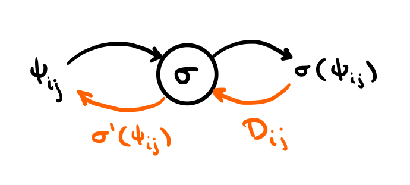
For the purposes of illustration we use a simple two-layer neural network with output projection. Let $x\in \mathbb{R}$, $W^1 \in \mathcal{M}_{d\times 1}$, $W^2 \in \mathcal{M}_{d\times d}$, $M\in \mathcal{M}_{1\times d}$, and $\sigma$ an activation function. The network is
$$u(x)=M\cdot(\sigma(W^2\cdot\sigma(W^1\cdot x))),\tag{*}$$or equivalently via the recursive formulas
$$\begin{align*} a^1_j &= W^1_jx, \\ s_j^1 &= \sigma(a_j^1), \\ a_m^2 &= \sum_{j}W^2_{mj}s_j^1, \\ s_m^2 &= \sigma(a_m^2), \\ u &= \sum_{m}M_ms_m^2. \end{align*}$$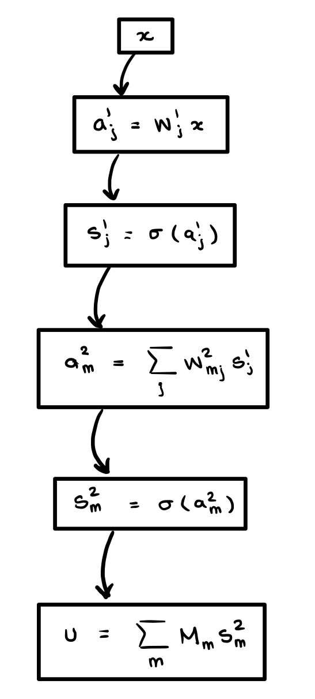
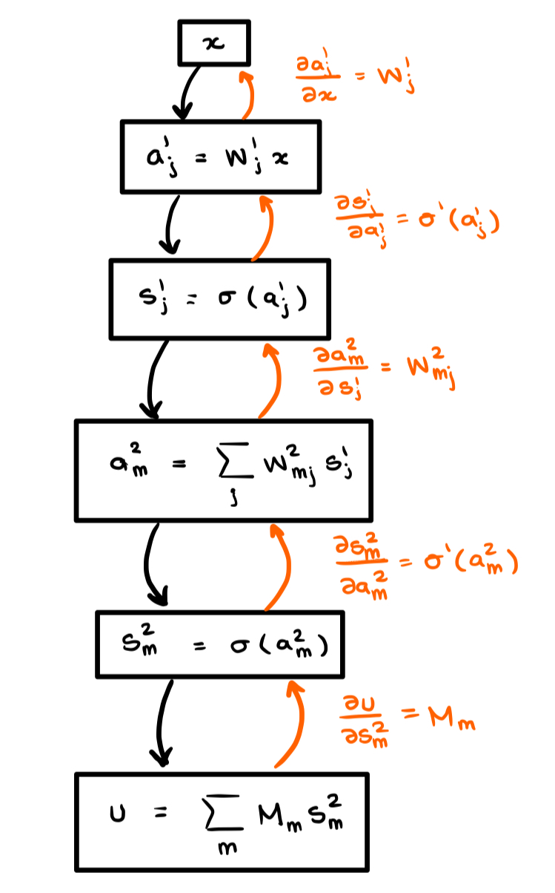
Autodiff builds a new computational graph for $u'(x)$ by tracing the derivative through the right-hand graph above. By the chain rule applied to $(*)$:
$$u'(x)=\left(\left(\left(\frac{\partial u}{\partial s_m^2}\odot\frac{\partial s_m^2}{\partial a_m^2}\right)\cdot \frac{\partial a_m^2}{\partial s_j^1}\right)\odot \frac{\partial s_j^1}{\partial a_j^1}\right)\cdot \frac{\partial a_j^1}{\partial x},$$where $\odot$ is the Hadamard (element-wise) product and $\cdot$ is the standard dot-product. Following the orange arrows through the graph generates a new computational graph for the derivative. When we draw this graph the functional composition introduces new dependencies that prevent it from being a simple chain:
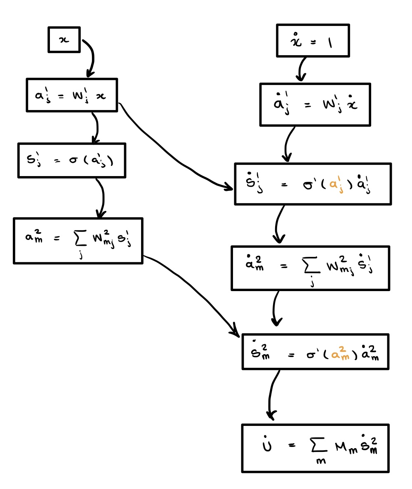
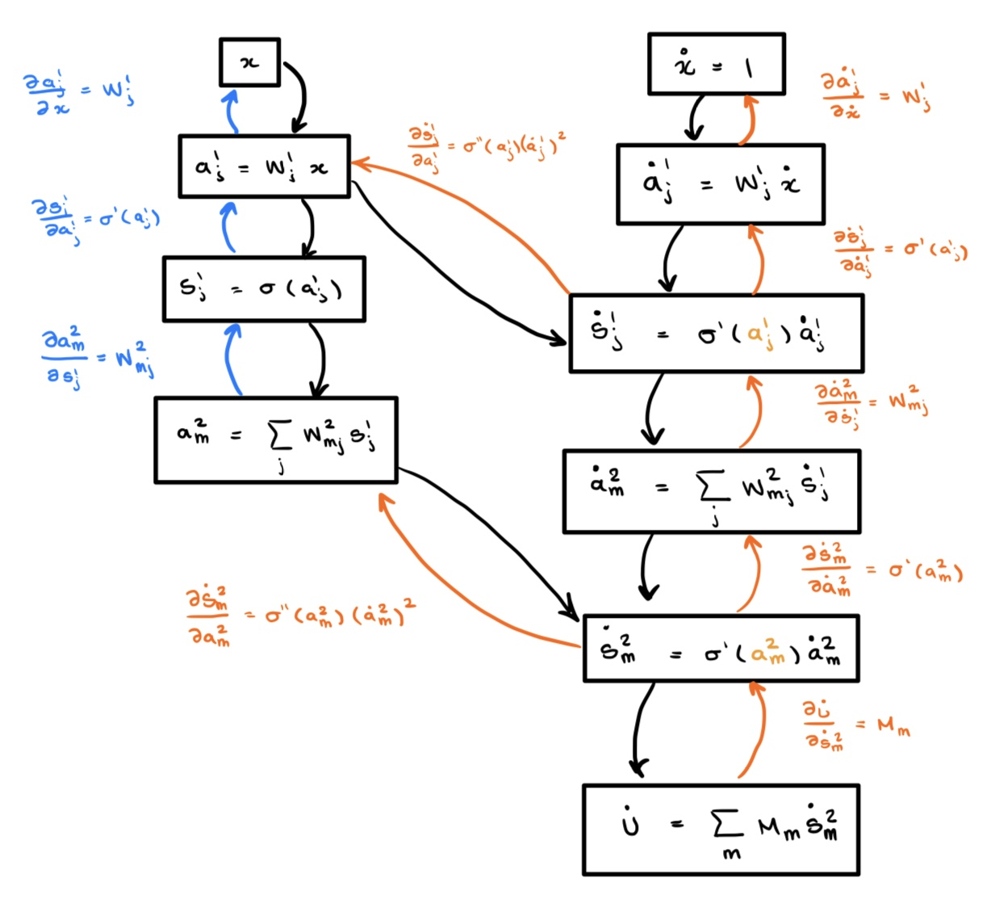
When we build the computational graph for the second derivative, the nodes computed for the first derivative are re-evaluated. The computer does not know it already computed these values. We draw the re-computed values in red below.
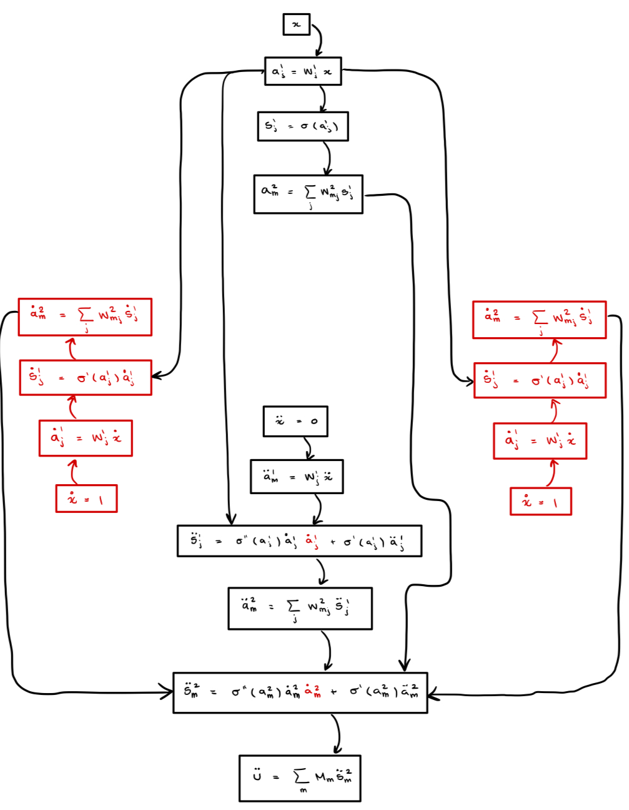
Exponential growth of the computational graph. For a depth-$d$ network, counting nodes at each derivative order gives:
$$\text{1st: } \underbrace{2d}_{\text{original}}+\underbrace{2(d+1)}_{\text{new}} = 4d+2$$ $$\text{2nd: } \underbrace{2d}_{\text{original}}+\underbrace{2\cdot 2d}_{\text{repeated 1st}}+\underbrace{2(d+1)}_{\text{new}} = 8d+2$$ $$\text{3rd: } \underbrace{2d}_{\text{original}}+\underbrace{4\cdot 2d}_{\text{repeated 1st}}+\underbrace{2\cdot 2d}_{\text{repeated 2nd}}+\underbrace{2(d+1)}_{\text{new}} = 16d+2$$That is, $\#\text{ nodes} = 2^{n+1}d+2$, so the computational graph grows like $\mathcal{O}(2^{n+1})$ in the number of derivatives $n$.
We can verify this empirically by plotting graph size as a function of derivative order for a simple depth-3 network:
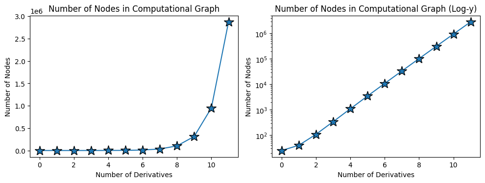
Summary: Functional evaluation introduces extra dependencies in the derivative graph, forcing recomputation. This leads to exponential blowup in both memory and runtime when using autodiff to take high-order derivatives.
Neural networks precede autodiff by nearly 30 years, and there were almost three decades of impressive neural network research prior to its widespread adoption. There are alternative methods for computing derivatives — methods that avoid the repeated computation by working directly with the recursive structure of the network.
We base our work on the TangentProp formalism introduced by Simard et al. in 1991, written before autodiff's widespread adoption. They propose computing both $f$ and $\nabla_{\boldsymbol{x}} f$ in a single forward pass by exploiting the explicit recursive structure of the network. The activation at layer $\ell$ is
$$a^\ell_i = \sum_{j}w_{ij}\sigma(a^{\ell - 1}_j),\tag{3}$$and differentiating with respect to the network inputs gives
$$\partial_{x_m}a_i^\ell = \sum_j w_{ij}\sigma'(a_j^{\ell-1})\,\partial_{x_m}a_{j}^{\ell - 1}. \tag{4}$$The key observation: the activation at layer $\ell$ and its derivative depend only on the activation (and its derivative) from the previous layer. Thus we can compute physical derivatives in a single forward pass, without building a new graph.
TangentProp computes a single derivative because that was sufficient for its original use case. But the principle — that physical derivatives can be computed recursively in one forward pass — extends to any number of derivatives. We propose $n$-TangentProp, which computes $\nabla_{\boldsymbol{x}}^n f$ in a single forward pass, achieving runtime $\mathcal{O}(nM)$ vs. autodiff's $\mathcal{O}(2^nM)$.
Most readers know Leibniz's formula for higher-order derivatives of products:
$$\frac{d^n}{dx^n}(fg) = \sum_{j=0}^n C_{j,n}f^{(j)}g^{(n-j)}.$$The lesser-known generalization of the chain rule is Faà di Bruno's formula:
$$\frac{d^n}{dx^n}(f\circ g) = \sum_{\boldsymbol{p}\in \mathcal{P}(n)}C_{\boldsymbol{p}}\,(f^{(|\boldsymbol{p}|)}\circ g)\prod_{j=1}^{n}(g^{(j)})^{p_j},$$where the sum is over the set $\mathcal{P}(n)$ of partitions of $n$, with $\boldsymbol{p}$ an $n$-tuple satisfying $\sum_k k p_k = n$, $|\boldsymbol{p}| = \sum_k p_k$, and $C_{\boldsymbol{p}}$ a readily computable combinatorial constant.
Applying Faà di Bruno's formula to (3) gives the $n$-TangentProp update rule:
$$\partial_{x^m}^n a^\ell_i = \sum_j w_{ij}^\ell(\xi^{(n)})_j^{\ell - 1}, \qquad (\xi^{(n)})^{\ell}_j = \sum_{\boldsymbol{p}}C_{\boldsymbol{p}}\,\sigma^{(|\boldsymbol{p}|)}(a_j^{\ell-1})\prod_{k=1}^m\left((\xi^{(k)})_j^{\ell-1}\right)^{p_k}.$$Once implemented, this computes $n$ derivatives in (quasi)linear time. The implementation is not particularly difficult and makes for a good ML programming exercise. Our complete code is on GitHub.
Below is the computational graph for the second derivative computed via $n$-TangentProp. Compare this with the autodiff graph above:
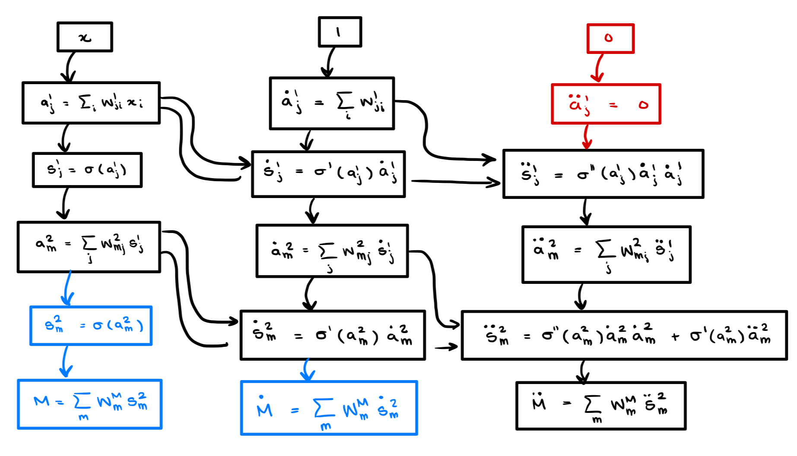
Our algorithm is not quite linear and autodiff is not quite exponential. $n$-TangentProp is slightly super-linear, and autodiff is slightly super-exponential. The reason is the sum over integer partitions in Faà di Bruno's formula. The number of such partitions is the partition function $p(n)$:
$$p(n):=\text{\# of integer partitions of } n.$$The classical Hardy-Ramanujan result gives the tight asymptotic bound
$$p(n)=\mathcal{O}\!\left(\frac{e^{\pi\sqrt{2n/3}}}{n}\right) \approx \mathcal{O}\!\left(\frac{e^{\sqrt{n}}}{n}\right).$$This root-exponential dependence cannot be avoided by any differentiation algorithm — it is an unavoidable consequence of differentiating through function composition, which necessarily requires Faà di Bruno's formula. The more precise runtimes for autodiff and $n$-TangentProp are
$$\frac{e^{\sqrt{n}}}{n}M^n \quad\text{and}\quad e^{\sqrt{n}}M$$respectively. For large $n$ the advantage of $n$-TangentProp is clear: autodiff is super-exponential while $n$-TangentProp is sub-exponential.
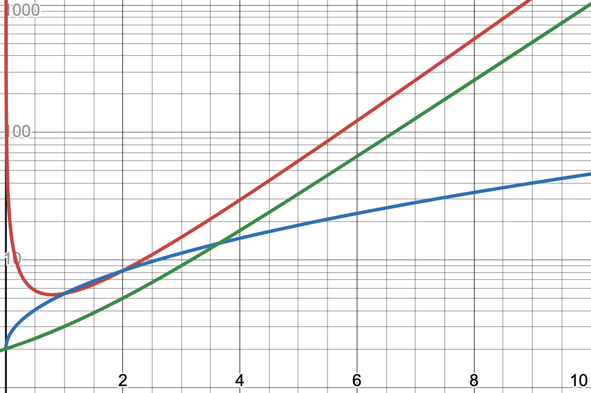
The following plots show speed comparisons for forward and backward passes through a network (not training yet) as a function of derivative order and network size.
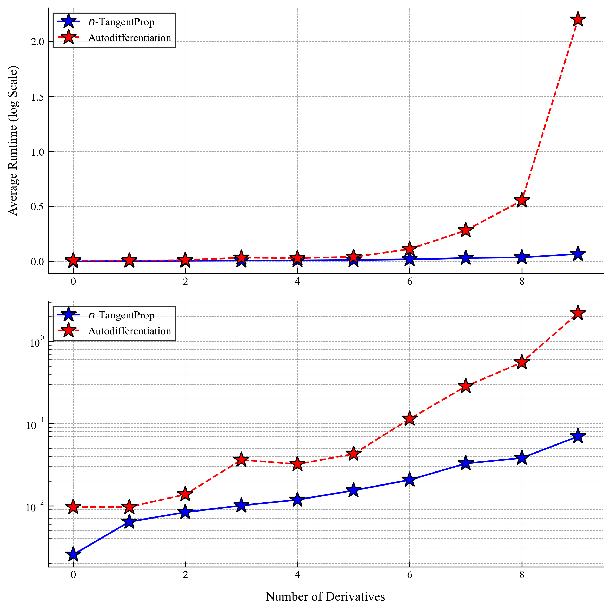
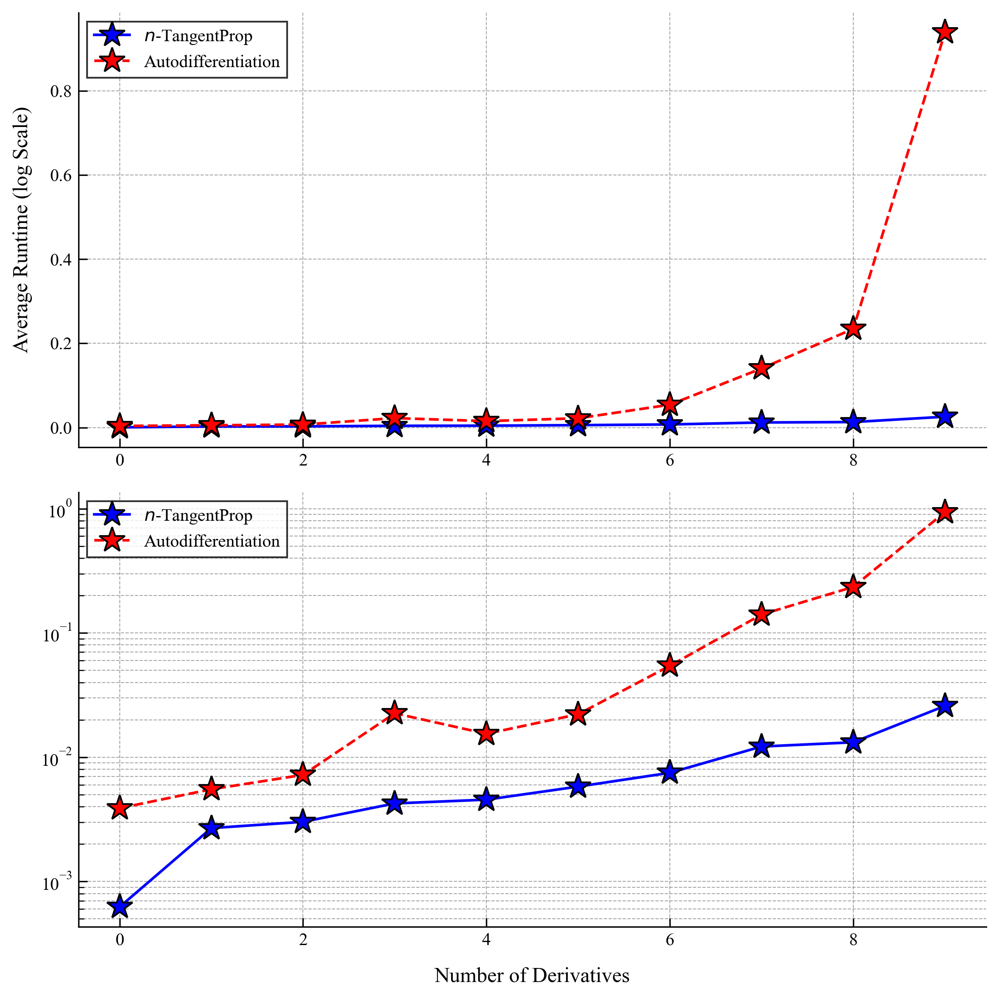
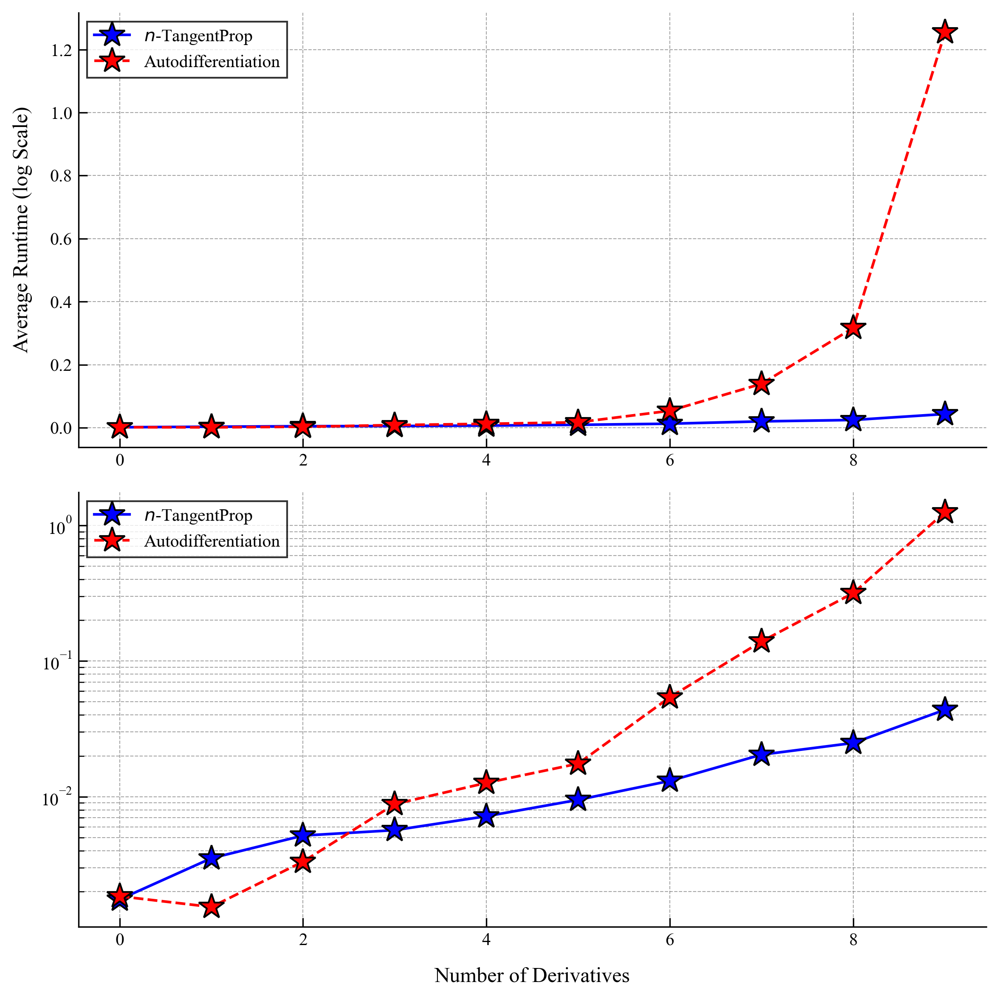
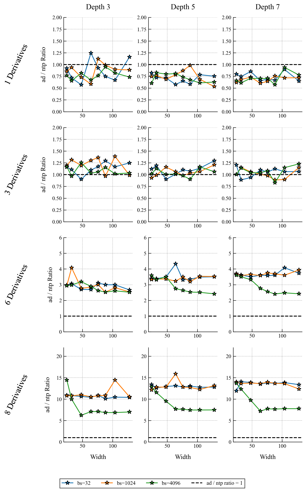
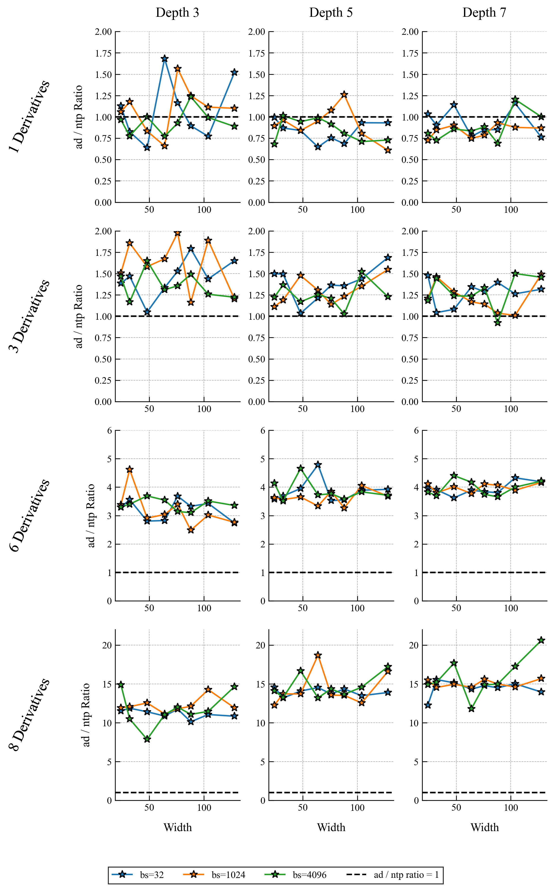
To illustrate the method in a real-world application we find smooth self-similar solutions to Burgers equation, the canonical model for 1D shock formation:
$$\partial_t u + u\,\partial_x u = 0. \tag{6}$$Converting to self-similar coordinates via $u(x,t)=(1-t)^\lambda U(X)$, $X=x/(1-t)^{1+\lambda}$, the PDE becomes the ODE
$$-\lambda U + \bigl((1+\lambda)X+U\bigr)U' = 0.\tag{7}$$This problem admits an implicit exact solution $X = -U - CU^{1+1/\lambda}$, but the techniques developed here generalize to much more challenging problems where no closed form exists. We deploy a PINN to solve (7), finding both $U$ and $\lambda$ simultaneously via gradient descent. Since PINNs are automatically $C^\infty$, enforcing smoothness constraints at the origin — which determine $\lambda$ — is straightforward.
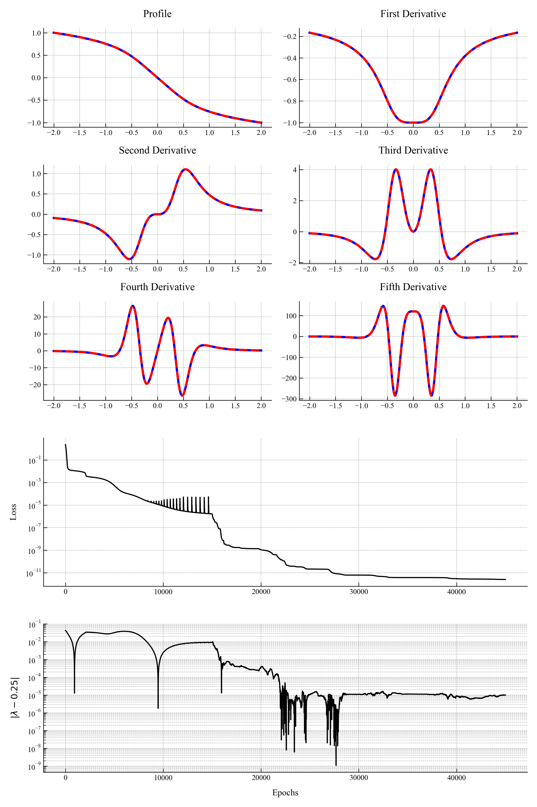
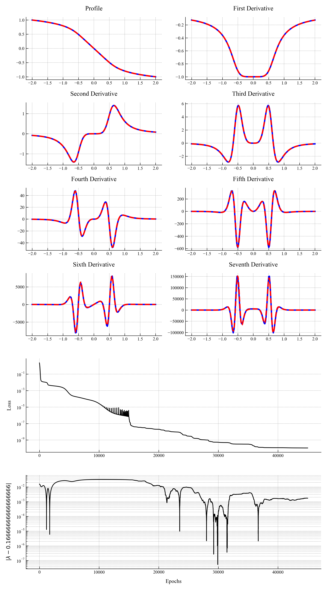
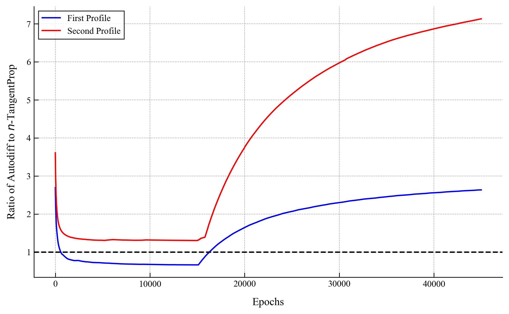
We only computed the first two profiles using autodiff. Already for the third profile, autodiff required more than 24 hours on an A6000 GPU. With $n$-TangentProp this took under 1 hour: over 24× speedup. For the fourth profile we estimate autodiff would take ~100 hours; $n$-TangentProp computed it in under 90 minutes: over 65× speedup.
For any PINN use case requiring three or more derivatives, we recommend implementing $n$-TangentProp to avoid needlessly wasting compute.
Consequences of this work include:
Several promising extensions remain open. If anyone is interested in these as projects, please reach out.